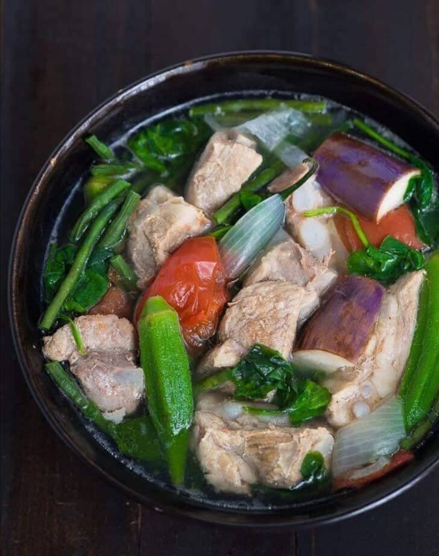

Sinigang

Sinigang na baboy
Sinigang is a sour soup native to the Philippines. This recipe uses pork as the main ingredient.
Other proteins and seafood can also be used. Beef, shrimp, fish are commonly used to cook sinigang.
Ingredients
- pork belly or buto-buto
- spinach or kang-kong
- fish sauce
- string beans sitaw, cut in 2 inch length
- tomato
- chilli or banana pepper
- water
- gabi
- cooking oil
- sliced onion
- sinigang mix
Steps
- Heat the pot and put-in the cooking oil.
- Sauté the onion until its layers separate from each other.
- pork belly and cook until outer part turns light brown.
- Put-in the fish sauce and mix with the ingredients.
- Pour the water and bring to a boil.
- Add the taro and tomatoes then simmer for 40 minutes or until pork is tender.
- Add the string beans (and other vegetables if there are any) and simmer for 5 to 8 minutes
- Put-in the spinach, turn off the heat, and cover the pot. Let the spinach cook using the remaining heat in the pot.
- Serve hot. Share and enjoy!